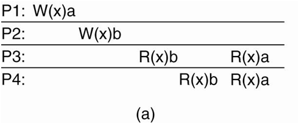

Data are generally replicated to enhance reliability or improve performance. One of the major problems is keeping replicas consistent. Informally, this means that when one copy is updated we need to ensure that the other copies are updated as well; otherwise the replicas will no longer be the same.
There are two primary reasons for replicating data: reliability and performance. First, data are replicated to increase the reliability of a system.
If a file system has been replicated it may be possible to continue working after one replica crashes by simply switching to one of the other replicas. Also, by maintaining multiple copies, it becomes possible to provide better protection against corrupted data.
For example, imagine there are three copies of a file and every read and write operation is performed on each copy. We can safeguard ourselves against a single, failing write operation, by considering the value that is returned by at least two copies as being the correct one.
The other reason for replicating data is performance. Replication for performance is important when the distributed system needs to scale in numbers and geographical area.
For example,when an increasing number of processes needs to access data that are managed by a single server .In that case, performance can be improved by replicating the server and subsequently dividing the work.
Replication and caching for performance are widely applied as scaling techniques. Scalability issues generally appear in the form of performance problems. Placing copies of data close to the processes using them can improve performance through reduction of access time and thus solve scalability problems.
A data store may be physically distributed across multiple machines. In particular, each process that can access data from the store is assumed to have a local (or nearby) copy available of the entire store. Write operations are propagated to the other copies.
There are different ways for applications to specify what inconsistencies they can tolerate.
Measuring inconsistency in terms of numerical deviations can be used by applicationsfor which the data have numerical semantics. One obvious example isthe replication of records containing stock market prices.
Staleness deviations relate to the last time a replica was updated. For some applications, it can be tolerated that a replica provides old data as long as it is not too old.
There are classes of applications in which the ordering of updates are allowed to be different at the various replicas that come under deviation with respect to the ordering of update operation.
A consistency unit, abbreviated to conit. A conit specifies the unit over which consistency is to be measured. For example, in our stock-exchange example, a conit could be defined as a record representing a single stock. Another example is an individual weather report.
To illustrate numerical and ordering deviations, consider the two replicas as shown,
We see two replicas that operate on a conit containing the dataitems x and y. Both variables are assumed to have been initialized to O.Replica Areceived the operation
From replica B and has made it permanent (i.e., the operation has beencommittedat A and cannot be rolled back). Replica A has three tentative update operations:8,A, 12,A, and 14,A, which brings its ordering deviation to 3. Also note thatdue to the last operation 14,A, A's vector clock becomes (15,5). The only operation from B that A has not yet seen is IO,B, bringing itsnumerical deviation with respect to operations to 1. In this example, the weight ofthis deviation can be expressed as the maximum difference between the (committed)values of x and y at A, and the result from operations at B not seen by A. Thecommitted value at A is (x,y) = (2,0), whereas the-for A unseen-operation at Byields a difference of y = 5.
A similar reasoning shows that B has two tentative update operations: 5,Band 10,B , which means it has an ordering deviation of 2. Because B has not yetseen a single operation from A, its vector clock becomes (0, 11). The numericaldeviation is 3 with a total weight of 6. This last value comes from the fact B'scommitted value is (x,y) = (0,0), whereas the tentative operations at A willalready bring x to 6.
If a conit represents a lot of data, such as a complete database,then updates are aggregated for all the data in the conit. As a consequence, thismay bring replicas sooner in an inconsistent state.
Besides continuous consistency, there is a huge body of work on data-centricconsistency models.
A data store is sequentially consistent when the result of any execution is the same as if the (read and write) operations by all processes on the data store.
We used a special notation in which we draw the operations of a process along a time axis. The time axis is always drawn horizontally, with time increasing from left to right. The symbols mean that a write by process P; to data item x with the value aand a read from that item by Pi returning b have been done, respectively. We assume that each data item is initially NIL. When there is no confusion concerning which process is accessing data, we omit the index from the symbols Wand R.
PI does a write to a data item x, modifying its value to a. Note that, in principle, this operation WI (x)a is first performed on a copy of the data store that is local to PI, and is then subsequently propagated to the other local copies. In our example, P2 later reads the value NIL, and sometime after that a (from its local copy of the store). What we are seeing here is that it took some time to propagate the update of x to P2, which is perfectly acceptable.
In Fig (a) process PI first performs W(x)ato x. Later (in absolute time), process P2 also performs a write operation, by setting the value of x to b. However, both processes P3 and P4 first read value b, and later value a. In other words, the write operation of process P2 appears to have taken place before that of PI•
In contrast, Fig (b) violates sequential consistency because not all processes see the same interleaving of write operations. In particular, to process P3, it appears as if the data item has first been changed to b, and later to a. On the other hand, P4 will conclude that the final value is b
For a data store to be considered causally consistent, it is necessary that the store obeys the following condition:
Writes that are potentially causally related must be seen by all processes in the same order. Concurrent writes may be seen in a different order on different machines.
Here we have an event sequence that is allowed with a causally-consistent store, but which is forbidden with a sequentially-consistent store or a strictly consistent store. The thing to note is that the writes Wz(x)band WI (x)c are concurrent, so it is not required that all processes see them in the same order.
This sequence is allowed with a causally-consistent store, but not with a sequentially consistent store.
Now consider a second example. In Fig.(a) we have Wz(x)b potentiallydepending on WI (x)a because the b may be a result of a computation involvingthe value read by Rz(x)a. The two writes are causally related, so all processesmust see them in the same order. Therefore, Fig.(a) is incorrect. On the other hand, in Fig.(b) the read has been removed, so WI (x)a and Wz(x)b are nowconcurrent writes. A causally-consistent store does not require concurrent writesto be globally ordered, so Fig.(b) is correct. Note that Fig.(b) reflects asituation that would not be acceptable for a sequentially consistent store.
Implementing causal consistency requires keeping track of which processes have seen which writes.
Necessary criteria for correct synchronization:
The first condition says that when a process does an acquire, the acquire may notcomplete (i.e., return control to the next statement) until all the guarded shareddata have been brought up to date. In other words, at an acquire, all remotechanges to the guarded data must be made visible.
The second condition says that before updating a shared data item, a processmust enter a critical section in exclusive mode to make sure that no other processis trying to update the shared data at the same time.
The third condition says that if a process wants to enter a critical region innonexclusive mode, it must first check with the owner of the synchronization variableguarding the critical region to fetch the most recent copies of the guardedshared data.
Fig. shows an example of what is known as entry consistency. Insteadof operating on the entire shared data, in this example we associate locks witheach data item. In this case, P I does an acquire for x, changes x once, after whichit also does an acquire for y. Process P2 does an acquire for x but not for Y'. So thatit will read value a for x, but may read NIL for y. Because process P3 first does anacquire for y, it will read the value b when y is released by Pl'
A consistencymodel describes what can be expected with respect to that set when multipleprocesses concurrently operate on that data.Coherencemodels describe what can be expected to only a single data item